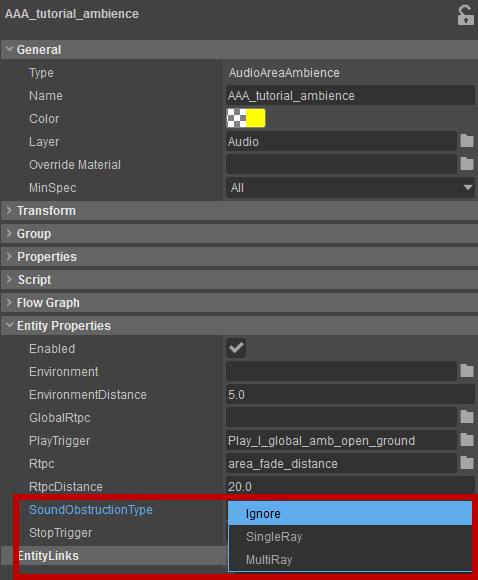

Overview
You can enable different Obstruction/Occlusion settings on the AudioTriggerSpot, AudioAreaEntity and AudioAreaAmbience properties in the Editor.
Using these settings correctly helps you to create a game world where sound is realistically filtered and attenuated and in line with its surrounding environments.
You can set the SoundObstructionType property for the AudioTriggerSpot, AudioAreaEntity and AudioAreaAmbience in their Properties panel.
All Audio Entities default to Ignore as their SoundObstructionType setting.
Pic1: SoundObstructionType options 
Property | Description |
|---|---|
| Ignore | No Raycasts are applied and the sound is unaffected by other objects in the game world. |
| SingleRay | The Entity shoots a SingleRay in order to calculate the treatment the sound receives - depending on the position and physical properties of the objects found between the source and the listener. |
| MultipleRay | The Entity shoots MultipleRay in order to calculate the treatment the sound receives - depending on the position and physical properties of the objects found between the source and the listener. |
For each Audio Object it's good practice to see which SoundObstructionType works best and to choose No Attenuation when there is no advantage gained from having Obstruction/Occlusion calculated.
Choose MultipleRay only if the accuracy of the single Raycast is not sufficient, or if you want the Entity to be able to calculate both the Occlusion and Obstruction separately.
Sound Obstruction/Occlusion
Occlusion
Occlusion is applied to a sound source that is completely or partially hidden from the listener by the other game object(s).
In the Engine a non-zero Occlusion value is set for a sound source whenever at least one ray that is cast from that source encounters a surface with non-zero sound_obstruction value.
The sound_obstruction values from the surfaces hit by the ray are accumulated and the total values are averaged over time for each ray to produce this ray's Occlusion value (shown in the ray label enabled with s_DrawAudioDebug h flag). With the SingleRay SoundObstructionType the Audio Object Occlusion value is equal to its only ray's Occlusion value; with MultipleRay SoundObstructionType the Audio Object Occlusion value is the average of the Occlusion values for all the rays.
s_OcclusionMaxDistance allows you to set a maximum distance beyond which the sound Obstruction/Occlusion calculations are disabled.
For example, "s_OcclusionMaxDistance = 150" will cause the Engine to calculate the Obstruction/Occlusion values for every active Audio Object with SoundObstructionType set to SingleRay or MultipleRay providing they are located within 150m from the sound's listener.
For a full reference of the audio system CVars in the Editor, please see Audio CVars & Console Commands.
Obstruction
Obstruction is applied to a sound source if the Occlusion value of the Center Ray from a Raycast is different from the average of the Occlusion values of the Outer Rays from the same Raycast.
Therefore, Obstruction will only be calculated when the SoundObstructionType is set to MultipleRay on the Entity, since a single ray does not provide enough information to differentiate between the Obstruction and Occlusion.
The Obstruction treatment is applied to the sound after the Occlusion treatment and in addition to it.
If the center ray of a Raycast has reached the listener without being blocked and the outer rays are fully or partially blocked by game objects, then the Obstruction value is set to zero and only the Occlusion value is positive.
Obstruction is also affected by the distance of the Raycasting Entity to the listener. As the distance increases, the Obstruction value decreases and the difference is transferred to the Occlusion value. This reflects the fact that with increasing distance the contribution of the direct line-of-sight sound path in the overall sound perception becomes progressively smaller.
s_FullObstructionMaxDistance sets the maximum distance after which the Obstruction value starts to decrease with distance.
For example, "s_FullObstructionMaxDistance = 5" means that for the sources that are farther than 5m away from the listener the Obstruction value will be lower than the actual value calculated from the Raycast. In this case, an object 10m away will have half the obstruction value of the similarly obstructed source located 5m away.
For a full reference of the audio system CVars in the Editor please see Audio CVars & Console Commands.
Synchronous vs Asynchronous Raycasts
The Raycasts used to calculate the Occlusion/Obstruction values can be performed synchronously (all individual ray's occlusions are available immediately in the same frame the Raycast has been requested) or asynchronously (the individual ray data is received over the next few frames and processed once all of the rays have reported back). Clearly, the synchronous Raycasts are much more responsive, but they also require more processing resources, and can cause performance spikes if a large number of Raycasts are performed in a single frame. In order to save resources and avoid performance spikes the Engine switches between synchronous and asynchronous Raycasts based on the distance between the sound source and the listener. For the sources close to the listener, the synchronous casts are used to provide a max responsive environment, for the sources further away the Engine uses asynchronous casts.
s_OcclusionMaxSynchDistance sets the distance after which only asynchronous Raycasts are used for Occlusion/Obstruction calculations.
For example, "s_FullObstructionMaxDistance = 10" means that for the sources within 10m from the listener the Raycast will be executed synchronously, and for the sources farther than 10m they will be executed asynchronously.
For a full reference of the audio system CVars in the Editor please see Audio CVars & Console Commands.
Setting Surface sound Obstruction Value
For each SurfaceType in your game you can define how much it affects the sound passing through it.
The sound_obstruction Physics property is a value between 0 and 1. For each Raycast from a sound source, the ray's Occlusion value increases by the sound_obstruction value of each surface it intersects.
Values for each SurfaceType can be set in the \Libs\MaterialEffects\SurfaceTypes.xml (which you can find in<Game folder>\GameSDK\Assets\gamedata.pak). The exact effect that this value has on the audio content of your game will be defined in your audio middleware.
Example:
In this example the SurfaceType mat_fabric would have a sound_obstruction of 0.5 applied to the sound.
For this material with a sound_obstruction = 0.5 the maximum Obstruction/Occlusion value that will be reached in the game is 0.5.
Therefore, if the sound would be fully occluded by one object with this surface type, the Occlusion value shown in the Editor debug and passed to the audio middleware will be 0.5.
If the sound would also be Obstructed the combined values of Obstruction and Occlusion would be summing up to 0.5. However, their sum would never exceed this maximum value as it is defined as the maximal Obstruction/Occlusion value in the sound_obstruction for the material.
Debugging Raycast in the Editor
There are three specific flags in the s_DrawAudioDebug CVar that will allow you to easily see in the Editor the values calculated by the Raycasts.
s_DrawAudioDebug
b: Show text labels for active Audio Objects. (This includes the current Obstruction (Obst.) and Occlusion (Occl.) value.)
g: Draw occlusion rays.
h: Show occlusion ray labels.
For a full reference of the audio system CVars in the Editor please see Audio CVars & Console Commands.
s_DrawAudioDebug gh
AudioTriggerSpot with SingleRay enabled in its SoundObstructionType properties
AudioTriggerSpot with MultipleRay enabled in its SoundObstructionType properties
To learn how to setup Sound Obstruction/Occlusion in Wwise please see Wwise & Occlusion.